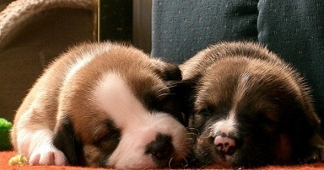
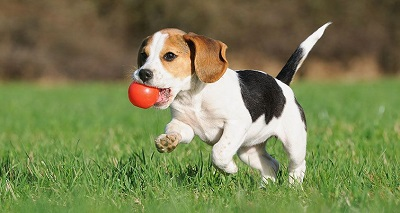

Ishrana
Trenutno se vodi diskusija o tome da li su domaći psi svaštojedi ili mesojedi. Kako su klasifikovani u red Carnivora, ne mora obavezno da znači da pseća ishrana mora biti isključivo meso. Psi su neobavezni mesojedi i ne zavise isključivo od proteina koji se nalaze u mesu, kako bi zadovoljili prehrambene zahtjeve. Raznovrsne su namirnice na jelovniku pasa, uključujući mlijeko, mliječne proizvode, jaja, povrće, voće i žitarice. U divljini, psi češće jedu ovakvu hranu, pošto je mnogo teže doći do mesa. Ponekad, psi jedu travu, čime neutrališu kiselinu u probavnom traktu, a moguće je i da ovim izazijaju povraćanje, kako bi izbacili nepoželjnu hranu.
Razmnožavanje
Profesionalni odgajivači pare pse samo za određenu svrhu. Ponekad se psi pare kako bi se dobili kučići za prodaju, a nekad da bi se dobili šampioni na izložbama. Ovdje je riječ, uglavnom, o ljudima koji su iskusni i vični ovom poslu.Osim ovakvih razmnožavanja, koja možemo nazvati odgovornim i u svrhu održavanja nivoa kvaliteta rase, često se zbog zarade ulazi i u neodgovorno odgajanje pasa i preprodaja „naveliko“. Pojavljuju se tri legla jedne kuje, u jednoj godini! U najvećoj mjeri, ovome pogoduje neozbiljnost u kinološkim savezima.
Plodnost
Sve pripitomljene vrste su kooperativne u procesu parenja. Osnovno ponašanje koje je različito kod pasa u odnosu na divlje kanide jeste gubitak veze između pojedinog mužjaka i ženke. Takođe se cijeni i mogućnost kuje da se tjera u bilo koje doba godine i to po mogućstvu dva puta, za razliku od divljih kanida koji se tjeraju jednom godišnje i to najčešće u kasnu zimu.
Poreklo
Psi su bili prve domaće životinje među sisavcima. Ljudi su ih pripitomili prije otprilike 12 000 godina. Sve pasmine potječu od vuka (Canis lupus) unatoč tvrdnjama nekih da potječu i od lisica.Psi su vjerojatno prve pripitomljene životinje, koje čovjeku vjerno služe sve do danas.[8] Ljudi su ih selektivno razmnožavali za mnoge namjene, a rezultat je toga životinja različitih oblika, veličina i sposobnosti.Pas, Canis familiaris, kralježnjak je, sisavac i zvijer, pripadnik porodice pasa (Canidae) koja obuhvaća i lisicu, čaglja, vuka te australskog dinga. Njuška mu je vlažna, posjeduje izvrstan njuh i vrlo je društven. Izrazito dobro trči i spretno pliva te može vrlo brzo mijenjati smjer trka. Dok spava, često ga prate sni u kojima trza repom, cvili i potiho laje i reži.  Smatra se da je predak psa bila životinja slična vuku - vjerojatno mješanac izmedu vuka i čaglja - koja je živjela prije nekoliko milijuna godina. Čak se i danas pripitomljeni psi mogu uspješno razmnožavati s vukovima i čagljevima. Neki smatraju da se svi psi mogu podijeliti u dvije velike skupine - na one koji su slični vukovima i na one koji su slični čagljevima.Bez obzira na isitnu o njihovu podrijetlu, potpuno je jasno da su psi po prvi put pripitomljeni još u kamenom dobu - prije najmanje 50.000, a vrlo vjerovatno čak i 100.000 godina. Sve ovo doznajemo s crteža iz paleolitika (staro kameno doba) koji prikazuju lov ljudi s psima. Najstariji ostaci pitomih pasa pronađeni su u iskopinama europskih naseobina, a datiraju iz kasnog mezolitika (srednje kameno doba). Ti ostaci nalikuju dingu, divljem psu udomaćenom u Australiji.O razlozima zbog kojih se psa počelo smatrati "čovjekovim najboljim prijateljem" postoje mnoge teorije, ali nisu pronađeni dokazi koji bi ijednu od njih potvrdili.Moguće je da su se psi zbog svoje sklonosti skupljanju ostataka priklonili čovjeku, a on je ubrzo razvio sve mogućnosti ove inteligentne, vješte i uglavnom poslušne životinje.